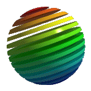

Steffen A. Mork
Projekte
eBusiness-Projekte/MATERNA GmbH (ab 2001):
- Entwicklung eines Content Management Frameworks auf Basis von OpenCMS
- Entwicklung einer Applikation für das Customer Service Center einer Bank auf Basis eines J2EE Application Servers (ATG Dynamo)
- Entwicklung einer Suchdatenbank für veröffentlichten Content einer Rundfunkanstalt
- Erstellung einer Benutzerverwaltung für eine Bank auf Basis eines J2EE Application Servers (ATG Dynamo)
- Design und Entwicklung einer Produktdatenbank für einen internationalen Technologiekonzern auf Basis eines J2EE Application Servers (ATG Dynamo)
- Anbindung der Backend-Systeme einer Bank-Niederlassung in der Schweiz an das deutsche Stammhaus
DMS-Projekte/MATERNA GmbH (1997-2000):
- Entwicklung einer High-Performance-Scan Lösung auf Basis der Twain-Schnittstelle unter Benutzung von MFC als GUI-Framework.
Raytracing-Paket Blizzard/Private Weiterbildung (seit 2001):
- Entwicklung eines objektorientierten Raytracers in C++. Dieser Raytracer ist plattformunabhängig unter Linux, Solaris und Windows lauffähig. Unter Windows wird der Raytracer durch eine Modellieroberfläche basierend auf MFC und OpenGL unterstützt.
3D-Projekte/Data Becker GmbH (1996):
- Entwicklung des 3d internet designers unter Benutzung der Win32-API. Die erstellten 3D-Szenen werden als VRML-Szenen dargestellt. Der 3d internet designer wurde in 5 Ländern vertrieben.
- Erstellung diverser Möbel und Wohnungen für den 3D WohnDesigner
Studentische Hilfskraft am Lehrstuhl für Computergrafik an der Universität Dortmund (1992-1995):
- Pflege und Programmierung der Videoanlage.
- Entwurf von Raytracing-Bildern, insbesondere Entwurf des Lehrstuhl-Logos.
- Modellierung von 3D-Szenen für das Projekt Standorte - Akademie auf Zeit
Controller-Programmierung/MASOBOSHI GmbH (1991):
- Programmierung einer Video Capturing-Lösung für den Amiga. Dabei wurde sowohl die hardware-nahe Programmierung, als auch die Anwendungsapplikation entwickelt.
- Programmierung einer Konfigurations-Software für SCSI-Controller des Amiga
Raytracing Software/Gold Disk GmbH (1990):
- Entwicklung des Gold Disk Dali Raytracers für den Amiga.
Grafische Benutzeroberfläche für den C64/Digital Marketing (1987):
- Programmierung und Vermarktung einer benutzerfreundlichen Benutzeroberfläche MGOS für den C64.